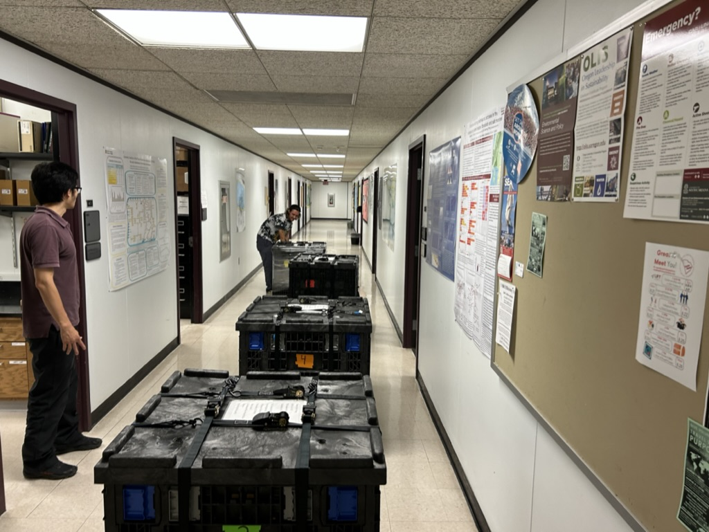
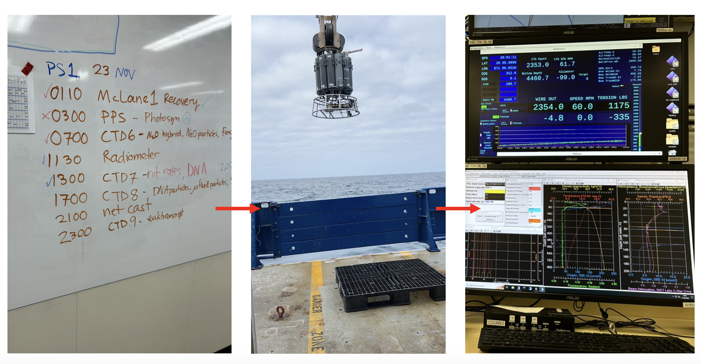
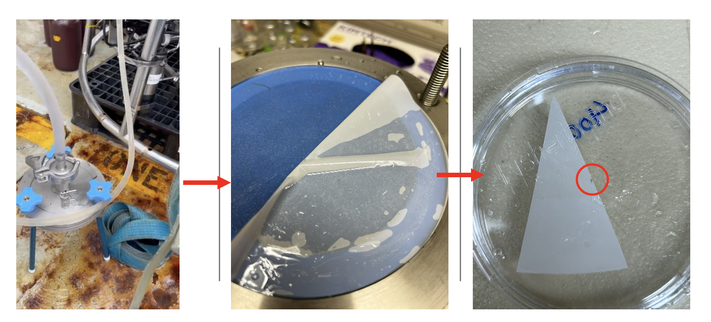
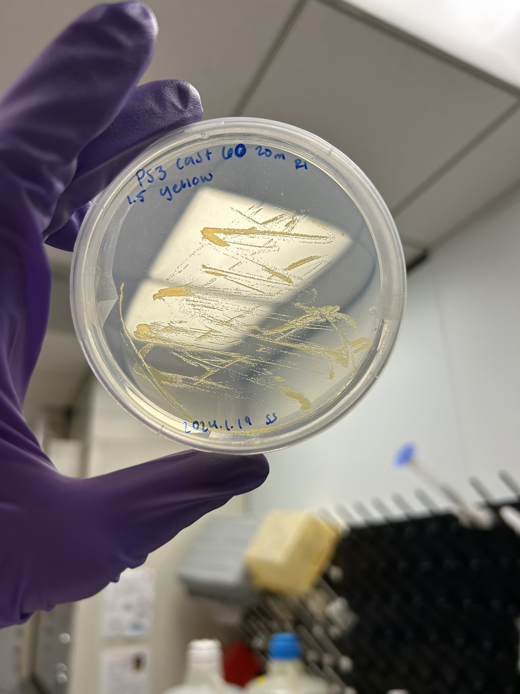
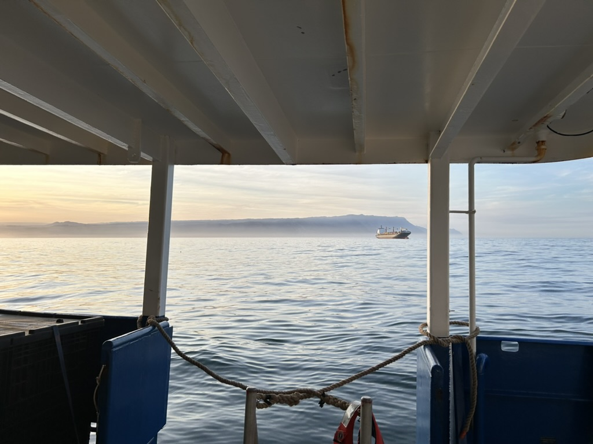

University of South Carolina
Peng Lab in Marine Microbial Ecology
ETSP Cruise: Fungi in the Oxygen Minimum Zone
October 2023 | Madeleine Thompson

Me standing in front of the CTD rosette.
In October 2023, we joined the R/V Revelle for a research cruise to study fungi living in the eastern tropical South Pacific oxygen minimum zone (ETSP OMZ), a low-oxygen region of the ocean off the coasts of Chile and Peru. Our goal was to collect seawater from a wide range of depths, from the surface down to 4,700 meters, both near the coast and far offshore, to better understand which fungi are present and what they may be doing in this environment.
Preparing for a cruise lasting over a month required a lot of planning. All sampling equipment, including pumps, filters, filter holders, and everyday lab supplies, had to be packed onto three pallets and shipped to Chile before we ever got on the ship. Once underway, we spent 33 days at sea collecting samples around the clock.

The three pallets we had to fit everything we needed for the entire cruise.
Each day, the chief scientist made a schedule for the number of CTD casts and the timing of each cast, along with which labs could collect water from that deployment. Scientists coordinated with the crew operating the CTD winch to lower, stop, and raise the CTD to specific depths. Bottles on the CTD rosette were then closed remotely at chosen depths to collect water for different experiments.

A typical daily CTD schedule, the CTD rosette itself, and the computers used to close bottles at specific depths.
Water was collected using a CTD rosette to sample specific depths throughout the water column. I was primarily involved in filtering seawater samples and preserving them for both cultivation and molecular analyses. When the CTD came back on deck, we filtered large volumes of seawater (typically 30 liters or more) through fine (0.2 µm) filters to collect microorganisms. Part of each filter was used for cultivation, while the rest was flash-frozen in liquid nitrogen and stored at -80°C for later DNA and RNA analysis.

Our filtration setup, pumping water from the CTD through the filter. The filter is folded for freezing at -80°C, with a small section used for cultivation.

Cultivated fungi from the ETSP OMZ at 20 meters depth.
Living on a ship for a month straight, often without seeing land, was a very different experience than anything I had done before. The constant motion of the ship became normal, and when we finally returned to land it felt strange to stand still again. The cruise gave me a new appreciation for everyday things like grass and trees. The ship was often covered in seabirds, which became an unexpected (and messy) part of daily life on board. While the days were long and the work intense, the experience was incredibly rewarding. I learned a lot both scientifically and personally, and I made friendships and connections that have lasted well beyond the cruise.

The first sight of land after 33 days at sea.